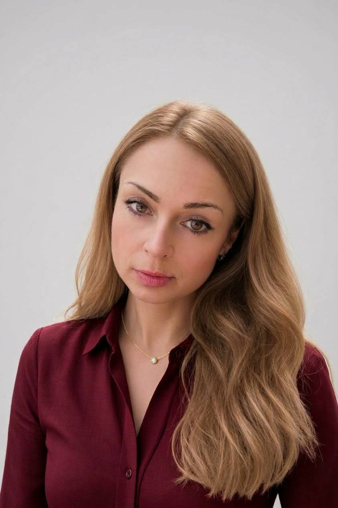
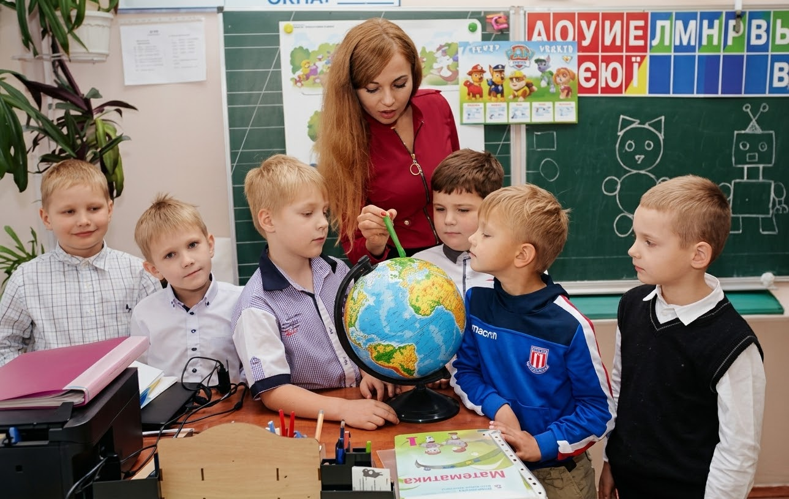
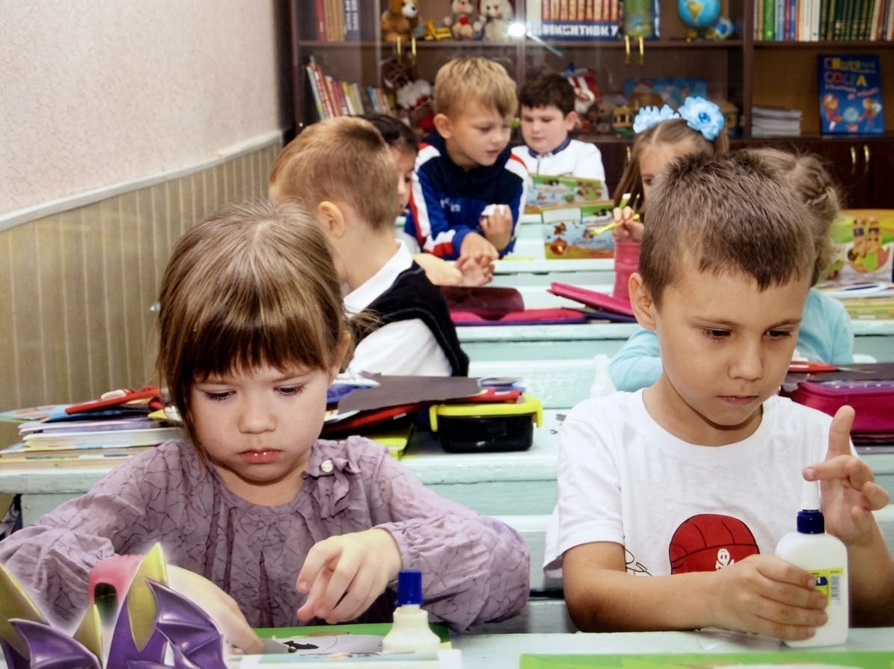
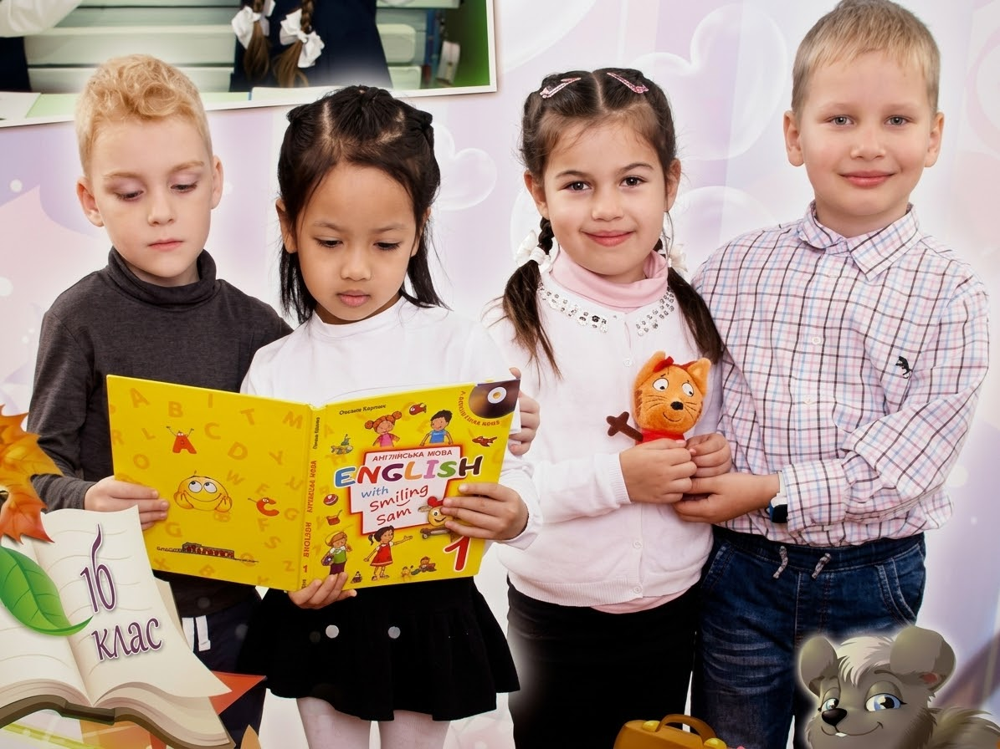
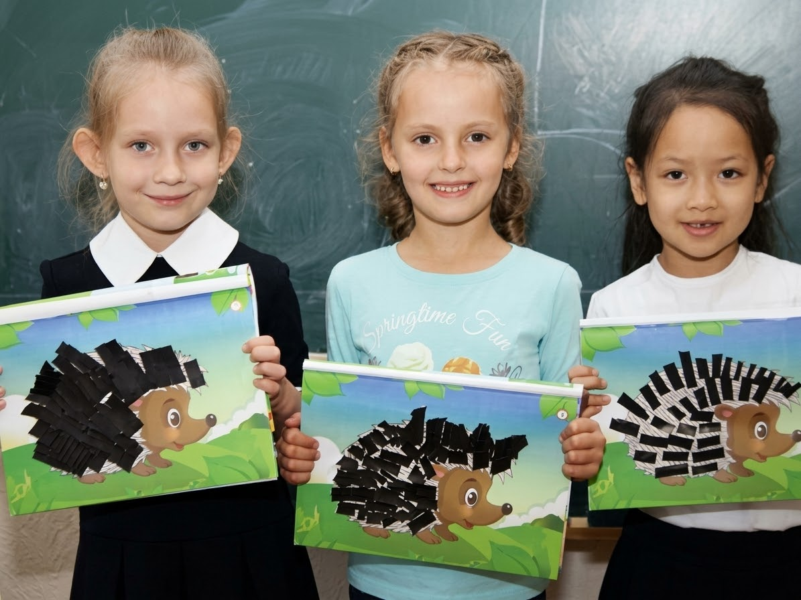
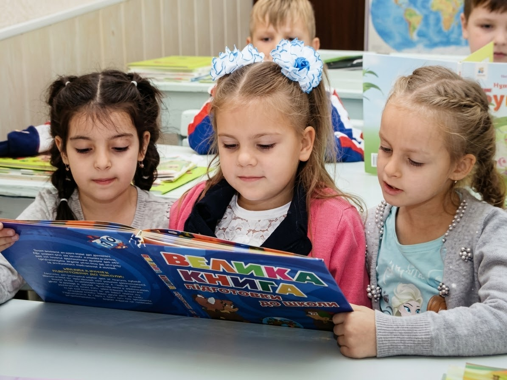
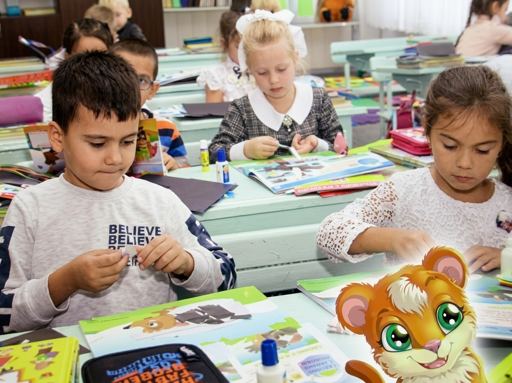
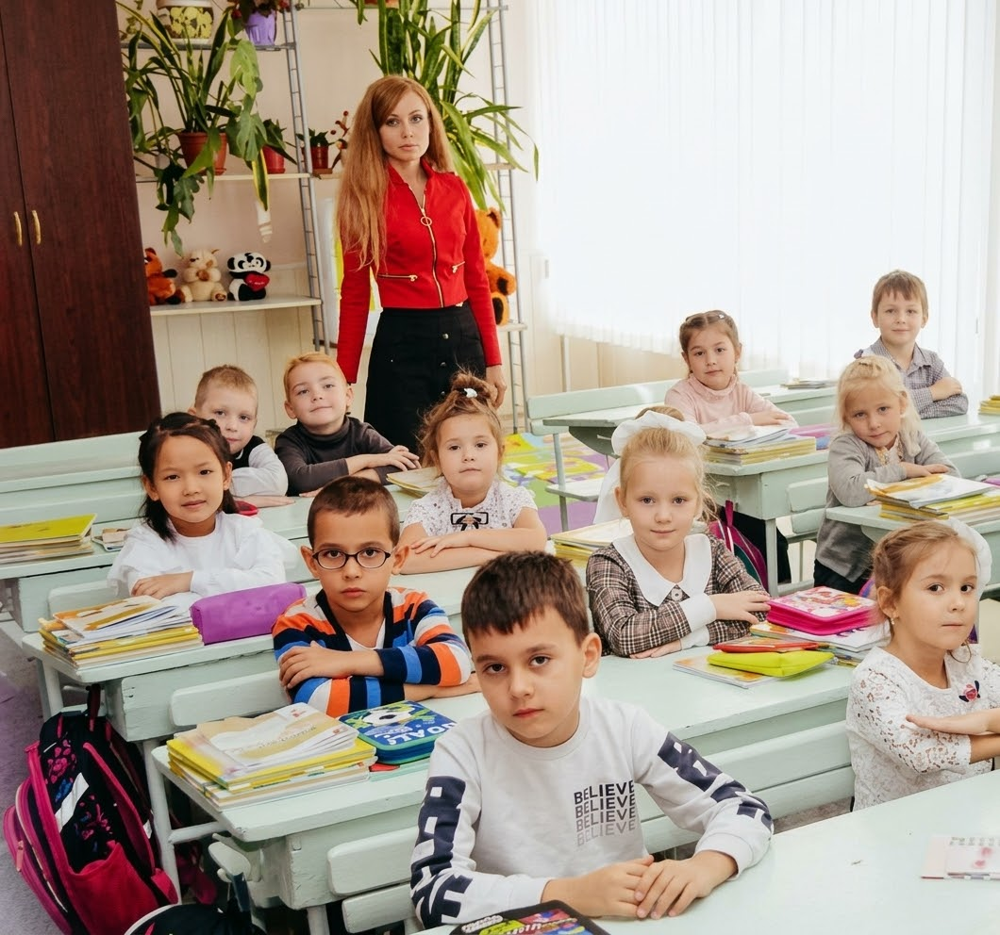
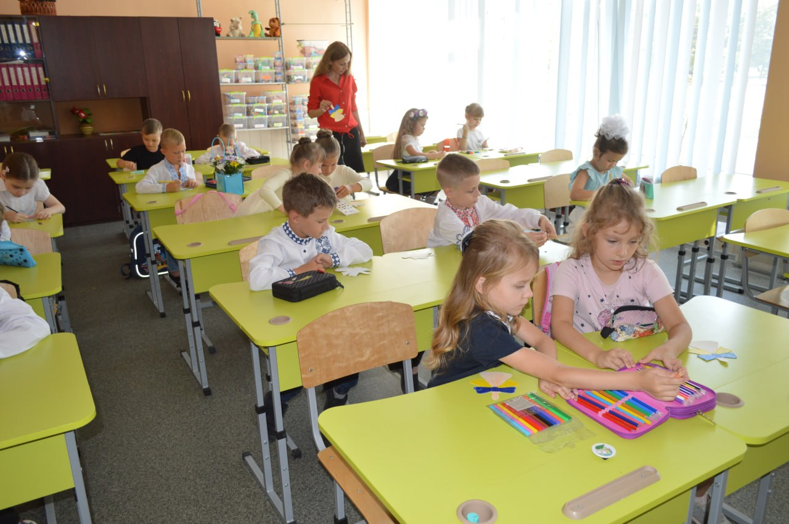

Вчитель початкових класів
Чуйкова Лариса Вікторівна
Ласкаво просимо на мій освітній сайт! Тут зібрано мої розробки, матеріали для учнів і батьків, а також яскраві моменти нашого шкільного життя.

Портфоліо
«Навчаю з цікавістю, виховую з довірою».
Вчитель початкових класів. Вища освіта, вища категорія.
Педагогічне кредо: вчитель – це людина, яка робить складні речі простими.
Педагогічні цілі
- стати для дітей другом і наставником;
- сприяти самореалізації кожної особистості;
- всебічно розвивати, навчати й виховувати;
- враховувати індивідуальні, вікові та психологічні особливості учнів.
34роки досвіду
100+розробок уроків
120+позакласних заходів
8випусків учнів
Батькам
Як допомогти дитині з навчанням удома?
Створіть спокійне місце для занять, дотримуйтесь режиму дня, хваліть за старання, а не лише за оцінки.
Розклад уроків і дзвінків
Дистанційне навчання
Все до школи
Фотогалерея








Контакти
Зворотний зв’язок
Напишіть мені — з радістю відповім на ваші запитання щодо навчання, матеріалів та співпраці.